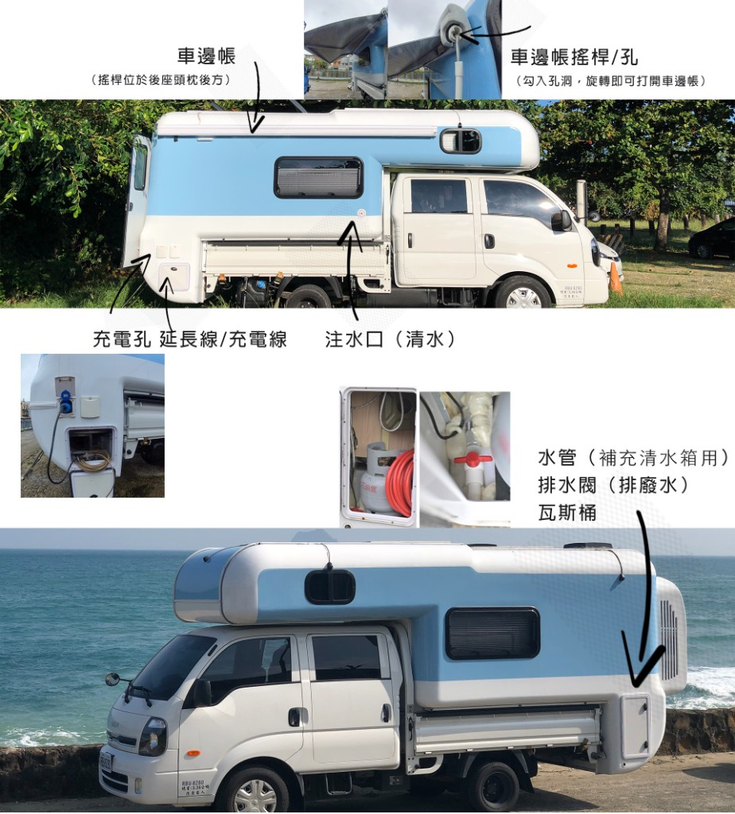
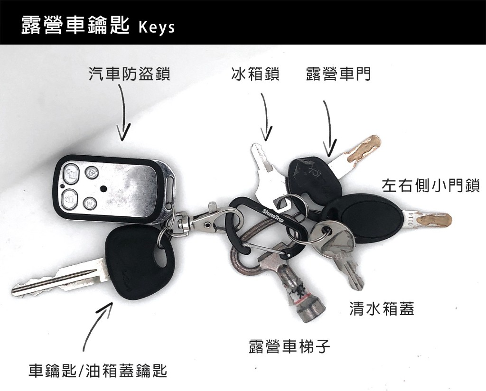
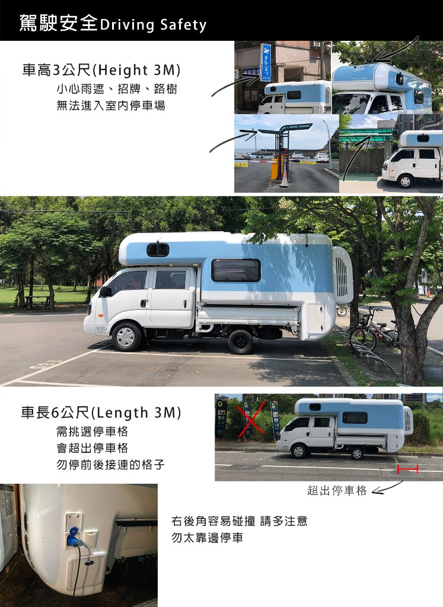
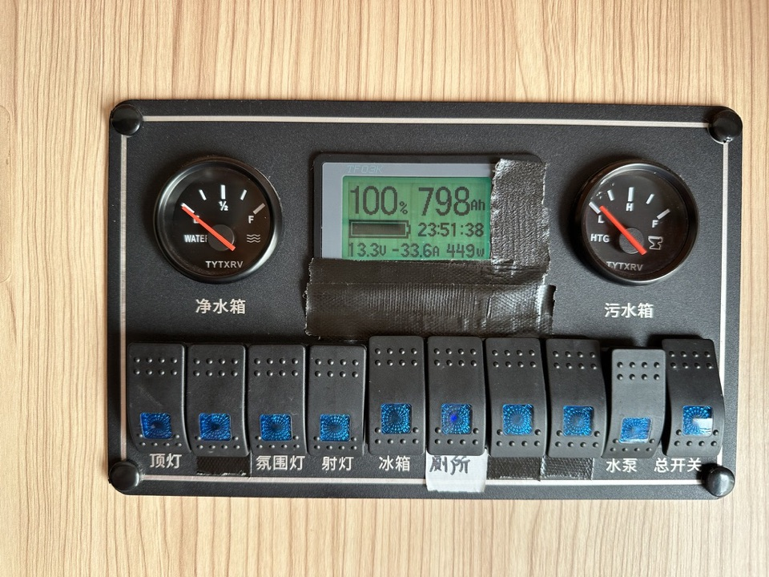
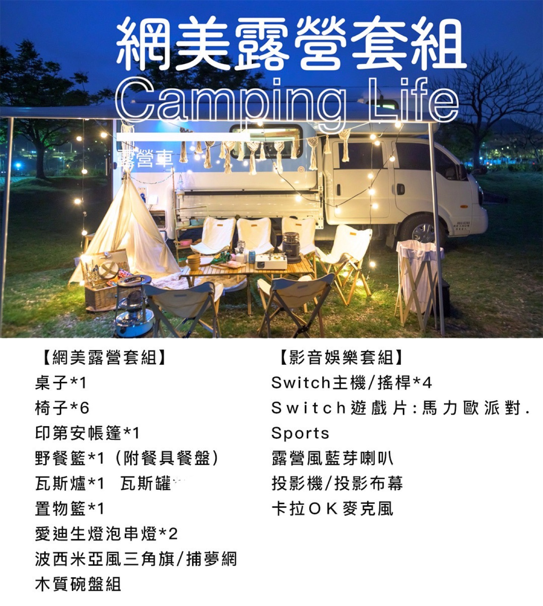

露營車內外完整教學影片
影片連結： YouTube 觀看（RcV0bOU4rLI）
這支影片是露營車內外完整導覽，包含設備位置、操作方式，以及客廳變床等使用教學。
備註：車上目前沒有微波爐（影片中有特別說明）；設備以交車現場為準。
歡迎你選擇我們的露營車旅程。這台車為小客車駕照即可駕駛、自排、合法乘坐 6 人。很多第一次體驗的朋友都說：「比想像中好開很多，不用太擔心！」若你是第一次找台北露營車出租，建議先把本頁看完，再搭配 車內規格與設備與 常見問題 FAQ一起確認。
延伸閱讀： 露營車使用教學懶人包、 露營車三天兩夜行程、 露營車資源整理。
約 7 分鐘｜台北露營車出租內外完整導覽
影片連結： YouTube 觀看（RcV0bOU4rLI）
這支影片是露營車內外完整導覽，包含設備位置、操作方式，以及客廳變床等使用教學。
第一次租露營車的客人，建議出發前至少看完主介紹影片，對補水、用電、冷氣與車內操作會更有概念。
台北露營車出租｜車外設備位置總覽
出發前先花幾分鐘對照圖片，記住額頭床、車邊帳、清水注水孔、柴油加油位置、營區接電／延長線與車尾室外機／熱水相關設備的大致位置，現場交車時會更容易跟上說明。



露營車操作教學｜鑰匙功能說明
交車時會拿到一組鑰匙，建議先對照圖片了解每一支的用途：包含車輛遙控、露營車門、車外艙門、冰箱鎖、清水箱蓋、梯子固定，以及引擎／油箱蓋相關鑰匙，避免在營區手忙腳亂。

台北露營車出租｜車內生活機能導覽
車內已配置完整生活機能：冷暖氣、110V 市電與 USB 插座（共 12 孔）、800Ah 電池、冷凍／冷藏冰箱、卡式爐與基本餐具、冷熱水淋浴＋廁所（110 公升清水箱）、兩張雙人床（其中一張由餐桌變形）。睡眠空間建議 5 位成人，或 4 大 2 小。
※ 若你需要更完整的規格數字，請同步閱讀 車內規格與設備頁。


露營車怎麼開｜限高、停車與車速建議
行駛中請隨時注意車高約 3 公尺（約一層樓）。除了陸橋、限高架、招牌與路樹，許多舊式建物或店面的遮雨棚高度較低，通過時務必放慢確認；一般室內停車場多數無法進入。
露營車車長較長，停車時往往會超出一般小客車格位的長度，後方可能突出格線，因此在停車場請盡量選空間足夠、不會擋住車道或轉彎動線的位子。若為路邊前後一格格子相連的停車區，建議優先停整排的第一格或最後一格，較不易影響其他車輛進出；靠邊停車時也要留意右後角視野與刮碰。
市區可以停車，只是在找停車位時要比一般小客車更謹慎、多預留一點時間與空間。
建議行駛速度約 90～100 km/h，不限里程，但建議每天不超過 200 公里。露營車的重點是「停下來享受」，若要環島，原則上建議安排4 天 3 夜以上比較舒服。

露營車用電教學｜露營車補水排水
露營車電量是整趟行程很重要的重點。一般三天兩夜不開空調，電量通常都夠；若有開空調，冷氣約可使用8～10 小時。建議有機會就先補電（例如路邊停車休息或可外接插頭時），不要像手機一樣等快沒電才充。這台車平均充電速度約每小時 7%，所以在開冷氣時一邊補電是可以的；如果等到電量太低才開始充，會追不上耗電速度。實務上也請避免讓電量低於10%，否則冷氣等高耗電設備可能無法使用。
第一次使用露營車時，很多人最擔心的就是電量怎麼看。這台車有電量監控面板，可以協助你快速判斷目前還剩多少電、現在是在耗電還是充電，以及目前設備用了多少瓦數。對第一次租車的新手來說，不用把數據看得太複雜，只要先看懂這三個位置，就能更安心使用露營車設備。

面板左邊的數值可以作為目前電池電量的判斷參考。因為露營車的電量不一定每次都直接顯示成百分比，所以現場會用伏特數作為比較直覺的判讀方式。一般來說，伏特數越高，代表目前剩餘電量越多。
| 伏特數 | 大致剩餘電量 |
|---|---|
| 13.5V | 90% 以上 |
| 13.4V | 約 80% |
| 13.3V | 約 70% |
| 13.2V | 約 60% |
面板中間會顯示目前系統的電流狀態（可視為庫倫計主要判讀位置），這裡是判斷現在到底是在補電，還是在使用電力的重要位置。若顯示負數，代表目前冷氣、冰箱、燈光或其他設備正在耗電；若顯示正數，代表系統正在充電，例如已接上外部電源。
面板右邊顯示的是目前正在使用的總瓦數，也就是現在這一刻設備總共消耗多少電力。這個數字可以幫助你快速判斷目前耗電量高不高，尤其是在同時開啟冷氣、冰箱、燈光或其他設備時，更能知道目前整體用電狀況。數字越高代表耗電越大；數字越低代表目前設備使用量較少。
如果你是第一次租露營車，記住這三個步驟就可以：先看左邊伏特數，判斷大概還剩多少電；再看中間數字是正數還是負數，確認目前是在充電還是耗電；最後看右邊瓦數，了解現在設備耗電高不高。這樣就能快速掌握目前電力狀況，不需要每次都看得很複雜。
在這個庫倫計的下方，有一個小櫃門可以打開，裡面有一個藍色的旋鈕，我會另外再附上照片說明位置。
這個藍色旋鈕可以控制露營車的充電速度。如果旋轉到其中一個方向，充電速度會比較快；旋轉到另一個方向，則會變小，最小接近關閉。
如果你在露營區遇到工作人員提醒，現場只適合使用低耗電設備，或擔心同時用電太多會跳電，請把這個藍色旋鈕調到中間，或中間再低一些，讓充電速度放慢一點，會比較安全。
簡單來說，如果露營區供電比較弱，就不要把充電速度開到最大。調整到中間或中間以下，通常會比較合適。

110 公升清水約可供 4～8 人次淋浴；可在露營區接水管加水，或於柴油加油站等可取得貨車洗車水管處補水（實務上請優先選擇合法且安全的加水點，並以現場交車說明為準）。
露營車補水排水是新手最容易緊張的部分，其實只要先理解清水箱、生活用水與排水閥的位置，並養成節水習慣，大多數三天兩夜露營車行程都能順利完成。外觀教學圖中的注水／排水／接電位置，建議與本段文字一起複習。
台北露營車出租｜影音設備操作概覽
若在戶外想使用投影設備，請依圖示完成投影幕固定、梯形校正，並以遙控進入藍牙選單連接手機或播放裝置。實際操作步驟請以現場教學與機器版本為準。
車上另附一條Type-C 轉 HDMI 連接線，可用手機或平板以 Type-C 直接連接投影機，進行同屏播放；實際支援仍依你的裝置型號與輸出規格為準。

車邊帳 5×5 公尺｜戶外道具使用範圍
車側有 5×5 公尺車邊帳。戶外道具（桌椅、帳棚等）僅能在露營區或合法場地使用，一般停車場或路邊不可擺放。建議第一晚先住露營區，熟悉加水流程與場地規範。


台北露營車出租｜預約、押金與還車重點
露營車三天兩夜｜慢遊與停車思維
可停露營區、公園停車場或海邊（仍須遵守現場規定）；並非所有露營區都接受露營車，請提前確認。行程原則建議「開車時間少於玩樂時間」。
如果你是第一次租台北露營車出租服務，建議不要把行程排得太滿。露營車旅行更適合慢遊：第一天移動到定點後休息，第二天安排附近景點，第三天再回程，會比每天長距離趕路更舒服。